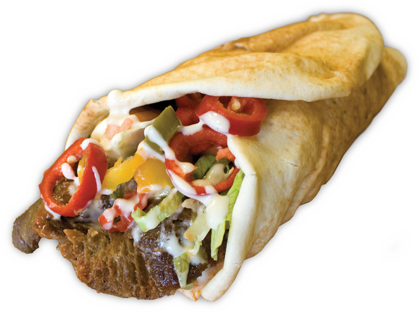

Lebanese donair

Description
This is a Lebanese donair recipe, traditional dish made with seasoned meat and tahini sauce that's enjoyed in many parts of the Middle East.
Ingredients - 7 servings
Main dish
- 3 ¼ pounds boneless top round steak, sliced very thin
- ½ cup red wine vinegar
- ½ cup olive oil
- ¼ cup fresh lemon juice
- 1 teaspoon allspice
- ½ teaspoon ground cinnamon
- ¼ teaspoon cardamom
- ½ teaspoon ground black pepper
- salt, to taste
- 2 large tomatoes, coarsely chopped
- 1 clove garlic, minced
Parsley sauce
- 1 bunch finely chopped fresh parsley
- 1 large sweet onion, finely chopped
- ⅓ cup olive oil
- 3 tablespoons fresh lemon juice
- 3 large tomatoes, coarsely chopped
Tahini sauce
- 2 cloves garlic, minced
- 1 cup tahini (sesame-seed paste)/li>
- ½ cup fresh lemon juice
- ½ cup water
- salt, to taste
- 7 (6 inch) pita bread rounds
Steps
- Place the sliced beef into a flat, ovenproof dish. Stir the red wine vinegar, 1/2 cup olive oil, lemon juice, allspice, cinnamon, cardamom, black pepper, salt, tomatoes and garlic together in a bowl until well blended. Pour over the beef, turning slices to coat evenly. Cover, and refrigerate 4 hours.
- Preheat oven to 425 degrees F (220 degrees C).
- Remove the cover from the dish with the beef, and cook in preheated oven until the meat is no longer pink, about 50 minutes. Cool slightly.
- Meanwhile, make the parsley sauce by mixing the parsley, sweet onion, and 1/2 cup olive oil together in a bowl. Place the tomatoes in a bowl, and set aside until needed.
- Make the tahini sauce by mixing the garlic, tahini, lemon juice, and water together in a bowl. Season to taste with salt.
- To serve, place the pita bread rounds on serving plates. Spoon some of the meat mixture down the center of each pita round. Top with the parsley mix, tomatoes, and tahini sauce. Roll up the sides of the pita bread around the filling, and serve.
Home